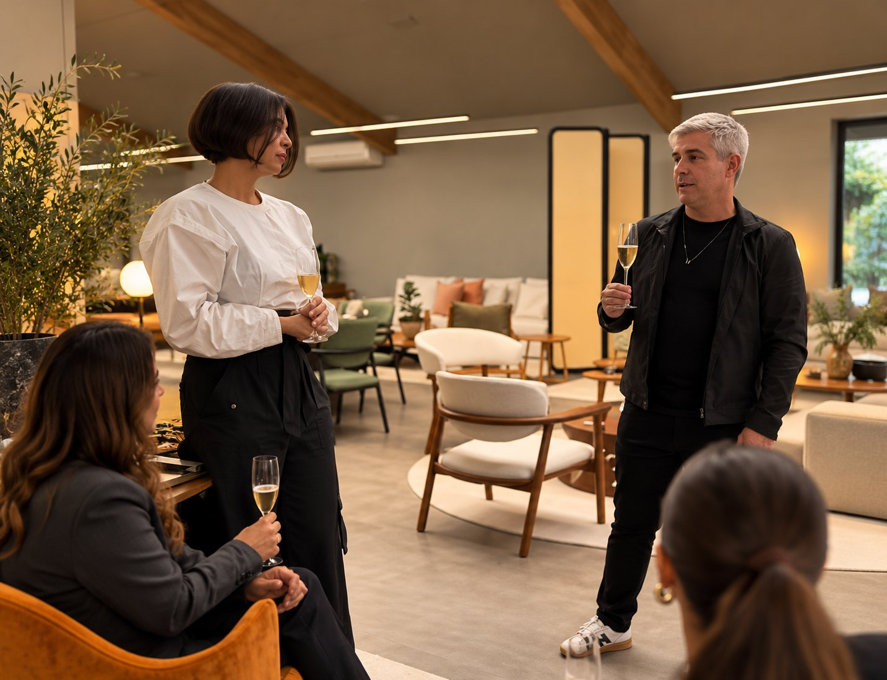

01
01Expor
Obras em rotação, de artistas convidados e da curadoria da galeria.
Nossos espaços03 de 05
O nosso espaço em São Paulo: galeria, sala de estar e ponto de encontro de arte, design e pessoas.
Falar com a BE.GALERIA
A casa
A Casa BE Galeria é onde tudo acontece: exposições, lançamentos, encontros de marcas e conversas que atravessam arte, moda, negócios e cultura. Um espaço contemporâneo, com obras em rotação e ambientes pensados para receber.
Aberta a visitas e disponível para eventos e experiências de marca, a casa é a expressão mais completa do que acreditamos: arte, conexões e experiências reais.
Em resumo
Na casa
Arraste para o lado
01Obras em rotação, de artistas convidados e da curadoria da galeria.
Lançamentos, conversas e encontros de marcas em ambientes pensados para receber.
 03
03Um espaço para ficar, não só para passar: estar, galeria e jardim.
Agende uma visita ou conte o que você imagina receber aqui.
Falar com a BE.GALERIAEm imagens
Abra qualquer foto para ver em tamanho grande.

Próximo espaço

Viva essa